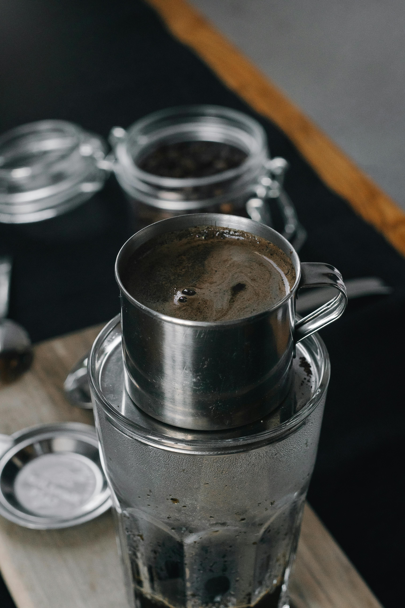

Tseung Kwan O Traidng
Cafetera Phin
Descubre la tradición del café vietnamita con la cafetera phin, diseñada para extraer todo el sabor y aroma de tu café favorito. Compacta, fácil de usar y perfecta para disfrutar un café suave e intenso, en cualquier momento.
Tajine
Experimenta la magia de la cocina tradicional de Marruecos con el tajine, un utensilio único diseñado para realzar los sabores y aromas de cada ingrediente. Perfecto para guisos, estofados y recetas llenas de autenticidad.
Infusor
Disfruta de un café recién hecho con el infusor de café, ideal para extraer todo el sabor y aroma de tus granos favoritos. Compacto y fácil de usar, te permite preparar una taza perfecta en cualquier momento, con la calidad que te mereces.